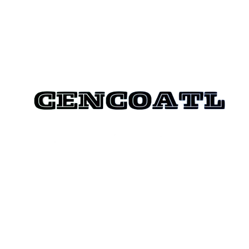

Cencoatl Capacitación
Temarios de cursos ambientales, SIG y análisis de datos
Selecciona un temario para consultar
Curso SIG Nivel Avanzado con QGIS
Ver temario
Curso SIG Nivel Intermedio con QGIS
Ver temario
Curso SIG Nivel básico con QGIS
Ver temario
Análisis de datos de herpetofauna
Ver temario
